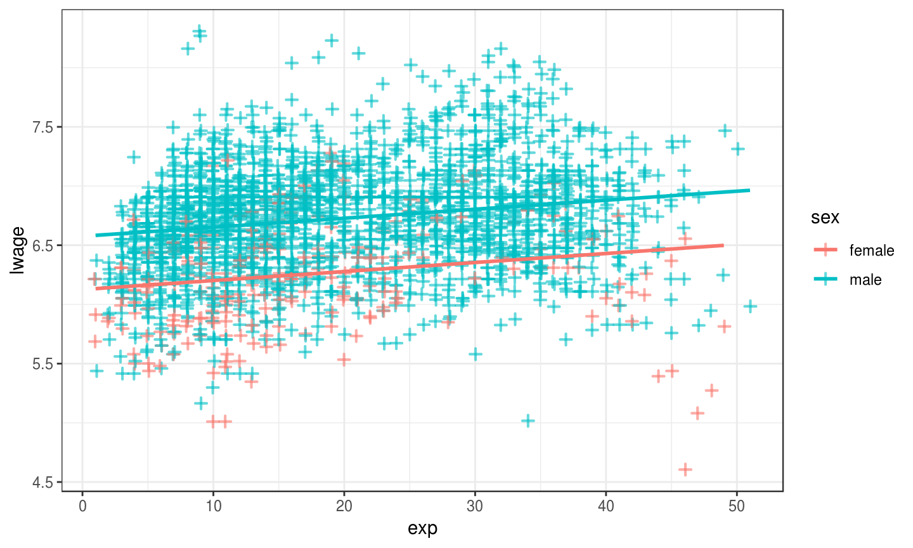

- We have seen different data types in the first session.
- One of them was
factor, representing categorical data: - A person is male or female
- A plane is passenger, cargo or military
- Some good is produced in Spain, France, China or UK.
2019-01-16
Categorical Variables
Binary/Boolean/Dummy
- A dummy variable is either
TRUEorFALSE(or0or1). - We use dummies to mark category membership: if member, then
TRUE. - for example, \[ \begin{aligned} \text{is.male}_i &= \begin{cases} 1 & \text{if }i\text{ is male} \\ 0 & \text{if }i\text{ is not male}. \\ \end{cases} \\ \end{aligned} \]
- Notice that whether
0corresponds toTRUEorFALSEis up to you. Just be consistent!
Single Binary Regressor
Dummy Variables
- We defined
is.male. Let's define its pendant. - That is, for females, \[ \begin{aligned} \text{is.female}_i &= \begin{cases} 1 & \text{if }i\text{ is female} \\ 0 & \text{if }i\text{ is not female} \\ \end{cases} \\ \end{aligned} \]
- let's all create this dataset:
df1 = data.frame(income=c(3000,5000,7500,3500),
sex=c("male","female","male","female"))
Falling into The Dummy Variable Trap
- Let's run regression \(y = b_0 + b_1 is.male + b_2 is.female\)
- First, we create those dummy variables:
df1$is.male = df1$sex == "male" df1$is.female = df1$sex == "female"
- and then let's run this:
lm(income ~ is.male + is.female,df1)
- What do you see? 🤔
The Trap: Multicolinearity
df1$linear_comb = df1$is.male + df1$is.female df1
## income sex is.male is.female linear_comb ## 1 3000 male TRUE FALSE 1 ## 2 5000 female FALSE TRUE 1 ## 3 7500 male TRUE FALSE 1 ## 4 3500 female FALSE TRUE 1
- Oops.
is.male + is.femaleis always equal1! - In other words,
is.male = 1 - is.female. A perfect colinearity! - Multiple regression fails. ðŸ˜
Drop One Category
- Notice: Inclusion of both dummies doesn't add anything
- If someone is
malethey are notfemale. - So we drop one of the categories. Only do \(y = b_0 + b_1 is.female\)
lm1 = lm(income ~ is.female,df1) lm1
## ## Call: ## lm(formula = income ~ is.female, data = df1) ## ## Coefficients: ## (Intercept) is.femaleTRUE ## 5250 -1000
Interpretation of Dummies
- We have excluded
is.male. - So what's the effect of being
malenow? - Well, male means
is.female = 0. Somaleis subsumed in the intercept! - At
is.female = 0, i.e. \(\widehat{y} = b_0 + b_1 \cdot 0=\) 5250 - Coefficient on
is.femaleis \(b_1=\) -1000. It measures the difference in intercept from being female. - That means: \(\widehat{y} = b_0 + b_1 \cdot 1=\) 4250
Our Dataset in a Picture

Regression connects Conditional Means!

\(b_1\) is Difference in Conditional Means

Interpretation of Dummy Coefficient \(b_1\)
- So, we have seen that \[ b_1 = E[Y|\text{is.female}=1] - E[Y|\text{is.female}=0] \]
- This was the meaning of the red arrow.
App!
- Time for you to play around with the Binary Regression!
- Try to find the best line again!
library(ScPoEconometrics)
launchApp("reg_dummy")
Dummy and \(X\)
Dummy and other Regressors
- What if we added \(\text{exper}_i\in \mathbb{N}\) to that regression? \[ y_i = b_0 + b_1 \text{is.female}_i + b_2 \text{exper}_i + e_i \]
- As before, dummy acts as intercept shifter. We have \[ y_i = \begin{cases} b_0 + b_1 + b_2 \text{exper}_i + e_i & \text{if is.female=1} \\ b_0 + \hphantom{b_1} + b_2 \text{exper}_i + e_i & \text{if is.female=0} \end{cases} \]
- intercept is \(b_0 + b_1\) for women but \(b_0\) for men
- Slope \(b_2\) identical for both!
App!
library(ScPoEconometrics)
launchApp("reg_dummy_example")
More than Two Levels: factor
- Sometimes two categories are not enough.
- The
Rdata typefactorcan represent more than just0and1in terms of categories. - Function
factortakes a numeric vectorxand a vector oflabels. Each value ofxis associated to alabel:
factor(x = c(1,1,2,4,3,4),labels = c("HS","someCol","BA","MSc"))
## [1] HS HS someCol MSc BA MSc ## Levels: HS someCol BA MSc
factorin anlmobject automatically chooses an omitted/reference category!
\(\log\) Transformations
\(\log\) Removes Scale
- Let \(\alpha\) represent the scale of the regression.
- E.g. if \(\alpha=1\), measure in Euros, \(\alpha=\frac{1}{1000}\) in thousands of Euros.
- \(\log\) transforming \(x\), we obtain \[ y = b_0 + b_1 \log(\alpha x) = b_0 + \log \alpha + b_1 \log x \] hence, scale \(\alpha\) moves to intercept, slope becomes invariant to it!
\(\log\) both Outcome and Regressor
- Now transform both outcome and regressor: \[ \log y = b_0 + b_1 \log x \]
- Then the slope coefficient is \[ b_1 = \frac{d\log y}{d \log x} = \frac{dy/y}{dx/x} \]
- This represents the elasticity of \(y\) with respect to \(x\)
- \(y\) changes by \(b_1\) percent if \(x\) changes by one percent.
\(\log\) Transformation only on \(y\)
- Now only the outcome is log transformed.
- We have a semi-elasticity formulation. \[ \log y = b_0 + b_1 x \]
- Slope coefficient becomes \[ b_1 = \frac{d\log y}{d x} \]
- A one-unit change in \(x\) increases the logarithm of the outcome by \(b_1\) units.
- Small \(\Delta x\): exponentiating \(b_1\) approximates effect of \(x\) on level of \(y\). (not on \(\log(y)\))
Estimating a Wage Equation
Wage Equation
- Wages \(w\) are often \(\log\)-transformed
- \(w\) are non-negative
- \(w\) are approximately log-normally distributed (so \(\log(w)\sim N\))
- Here is a typical equation: What's the return of experience? \[ \ln w_i = b_0 + b_1 exp_i + e_i \]
Wage Data
data(Wages,package="Ecdat") # load data str(Wages)
## 'data.frame': 4165 obs. of 12 variables: ## $ exp : int 3 4 5 6 7 8 9 30 31 32 ... ## $ wks : int 32 43 40 39 42 35 32 34 27 33 ... ## $ bluecol: Factor w/ 2 levels "no","yes": 1 1 1 1 1 1 1 2 2 2 ... ## $ ind : int 0 0 0 0 1 1 1 0 0 1 ... ## $ south : Factor w/ 2 levels "no","yes": 2 2 2 2 2 2 2 1 1 1 ... ## $ smsa : Factor w/ 2 levels "no","yes": 1 1 1 1 1 1 1 1 1 1 ... ## $ married: Factor w/ 2 levels "no","yes": 2 2 2 2 2 2 2 2 2 2 ... ## $ sex : Factor w/ 2 levels "female","male": 2 2 2 2 2 2 2 2 2 2 ... ## $ union : Factor w/ 2 levels "no","yes": 1 1 1 1 1 1 1 1 1 2 ... ## $ ed : int 9 9 9 9 9 9 9 11 11 11 ... ## $ black : Factor w/ 2 levels "no","yes": 1 1 1 1 1 1 1 1 1 1 ... ## $ lwage : num 5.56 5.72 6 6 6.06 ...
Estimating Wage Equation
lm_w = lm(lwage ~ exp, data = Wages) # setup fit summary(lm_w) # show output
## ## Call: ## lm(formula = lwage ~ exp, data = Wages) ## ## Residuals: ## Min 1Q Median 3Q Max ## -2.30153 -0.29144 0.02307 0.27927 1.97171 ## ## Coefficients: ## Estimate Std. Error t value Pr(>|t|) ## (Intercept) 6.5014318 0.0144657 449.44 <2e-16 *** ## exp 0.0088101 0.0006378 13.81 <2e-16 *** ## --- ## Signif. codes: 0 '***' 0.001 '**' 0.01 '*' 0.05 '.' 0.1 ' ' 1 ## ## Residual standard error: 0.4513 on 4163 degrees of freedom ## Multiple R-squared: 0.04383, Adjusted R-squared: 0.0436 ## F-statistic: 190.8 on 1 and 4163 DF, p-value: < 2.2e-16
Interpreting Results
- \(E[\ln w] = 6.68\) and \(E[w] = 882.93\)
- Additional year of experience increases \(E[\ln w]\) by 0.0088.
- Approximate effect on \(E[w]=\exp(b_1)=1.009\)
- Precise effect is \(100 * (\exp(b_1)-1) = 0.885\)
- Anway: Tiny effect! 😒
Results in a Picture

Different Intercepts by Gender?
- Let's see if there are important differences by gender in this: \[ \ln w_i = b_0 + b_1 exp_i + b_2 sex_i + e_i \]
- We just
updateourlmobject as follows:
lm_sex = update(lm_w, . ~ . + sex) # update lm_w with same LHS, same RHS, but add sex to it
Interpreting Intercepts by Gender
## ## Call: ## lm(formula = lwage ~ exp + sex, data = Wages) ## ## Residuals: ## Min 1Q Median 3Q Max ## -1.87081 -0.26688 0.01733 0.26336 1.90325 ## ## Coefficients: ## Estimate Std. Error t value Pr(>|t|) ## (Intercept) 6.1257661 0.0223319 274.31 <2e-16 *** ## exp 0.0076134 0.0006082 12.52 <2e-16 *** ## sexmale 0.4501101 0.0210974 21.34 <2e-16 *** ## --- ## Signif. codes: 0 '***' 0.001 '**' 0.01 '*' 0.05 '.' 0.1 ' ' 1 ## ## Residual standard error: 0.4286 on 4162 degrees of freedom ## Multiple R-squared: 0.1381, Adjusted R-squared: 0.1377 ## F-statistic: 333.4 on 2 and 4162 DF, p-value: < 2.2e-16
- Notice
sexmale!Rappends the offset level to the variable name. - Hence, does not display omitted category: there is no
sexfemale. femaleis the reference category.- Both groups have the same slope on
exp. - What does this look like now?
Picture for Intercepts by Gender
